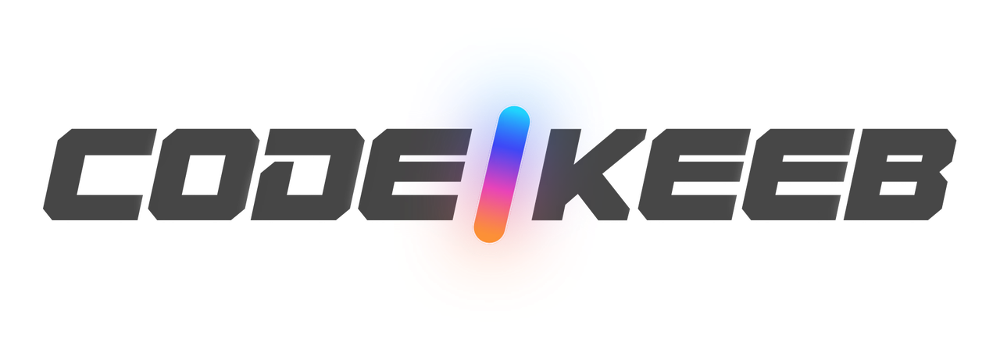

Not in the box: a USB-C cable. Use one that carries data. A charge-only cable charges the keyboard but won't reach Keymap Studio or update the firmware.
Every Codekeeb board is assembled, flashed and tested by hand before it ships. The core parts are socketed: swap any of them later, no soldering.
Something not right? Message us on Etsy, where you bought it. Include what you pressed and what happened.
etsy.com/shop/CodeKeeb

codekeeb.github.ioChoc · Space Black
Quick start
Each half has its own controller and battery. The left half talks to your computer; the right half connects to the left one on its own.
Plug the left half into your computer and it also types through the cable.
After a minute idle the lights go off; after 30 minutes it goes into deep sleep. Any key wakes it up. The lights are what use the most power.
Hold LOWER or RAISE and the other keys change function; let go and they come back.
Paper doesn't update. These do.